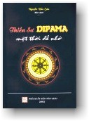

|
BuddhaSasana Home Page |
Vietnamese, with Unicode Times font |
|  |
THIỀN SƯ DIPA MA Nguyên tác: Knee Deep in Grace |
-ooOoo- Lời nói đầuRất ít khi trong cuộc đời chúng ta lại bắt gặp một con người quá khác thường đến nỗi đã biến đổi được cả phong cách sống của chúng ta. Dipa Ma là một nhân vật như vậy. Thoạt tiên tôi được nghe Thiền sư của tôi, ngài Anaganka Munindra, kể về người phụ nữ phi thường này, khi tôi sang Bodh Gaya, Ấn Độ, vào năm 1967 để hành thiền. Thiền sư của tôi đã huấn luyện Dipa Ma tại Miến Điện, là nơi ngài đã huấn luyện và thuyết pháp chín năm về trước. Thiền sư đã kể về bà thường xuyên như một yogi (thiền sinh) đã đạt đến, tiến tới rất ngoạn mục.- nhiều điểm kể về bà các bạn sẽ được đọc trong cuốn sách này. Nhiều điểm Ngài không nói bằng lời, nhưng hình như lần đầu tiên tôi được gặp bà lại là với những đặc tính khác thường bà khiến cho mọi người gặp được bà phải cảm kích lạ thường. Đó chính là đức tính bình thản, trầm lặng tuyệt vời, nó tràn ngập tình yêu thương ngọt ngào. Tính thầm lặng và bình an có một không hai trên trần gian này, không giống với bất kỳ điều gì tôi đã bắt gặp trước đây. Đây chẳng phải là một con người thực thụ. Và không muốn hay cần đến bất kỳ điều gì đáp trả lại. Chỉ đơn giản hoàn toàn vô ngã, chỉ độc nhất có tình yêu bình an còn sót lại nơi con người đó. Dipa Ma sản sinh ra cho ta sức cố gắng cao độ. Không dùng luật giới nhưng bằng truyền cảm. Bà chỉ vẽ ra những gì có thể bằng cách sống, điều có thể đó.- và bà đã mở toang cánh cổng cảm hứng cho chúng ta. bà có niềm tin không chao đảo nơi bất kỳ khả năng nào của chúng ta để tiến bước trên con đường Phật pháp. niềm tin đó được truyền tải tới chúng ta bằng cách chấp nhận hoàn toàn nơi chốn ta đang sinh sống. Cùng với tính nghiêm khắc động viên chúng ta đào sâu hiểu biết bằng cách tiếp tục luyện tập. Mặc dù Dipa Ma chỉ thực hiện được hai chuyến sang phương Tây. Ấn tượng về Phật giáo tại nước Mỹ đã trở thành rất sâu đậm. Bà đã là một phụ nữ duy nhất đầu tiên thực sự đã hoàn toàn chức năng Thiền sư phụ nữ theo truyền phái Nam tông đến thuyết pháp tại quốc gia này. mặc dù bà rất gắn bó với truyền thống, bà cũng có hiểu biết cho là phụ nữ đạt đến được đỉnh siêu nhiên là điều không dễ dàng (đặc biệt lại là một người đàn bà nội trợ, ) không thể nào bằng bất kỳ cách nào lại dám sánh vai với một hàng giáo phẩm mà nam giới đang chiếm lãnh nhiều ưu thế . trong trường hợp như vậy Dipa Ma đã trở thành một nhân vật quan trọng tại đất nước này đối với cả phụ nữ lẫn nam giới. Hiệu quả bà đã mang lại cho biết bao nhiêu đạo hữu vẫn còn dấy lên nơi rất nhiều trong hàng Tứ chúng. Tôi thật sung sướng và vô cùng biết ơn thấy rằng bà Amy Schmidt đã cưu mang được cuốn sách tuyệt vời này. đây chính là cơ may cho rất nhiều người trong chúng ta để nhớ lại những câu chuyện nho nhỏ và những cuộc gặp gỡ với Dipa Ma và cũng là cơ hội thuận tiện cho nhiều người khác được gặp lại Dipa Ma lần đầu tiên. Joseph Goldstein * Ghi chú: Chữ viết tắt "IMS" (Insight Meditation Society - Hội Thiền Quán, ở Barre, bang Massachusetts, Hoa Kỳ) được dùng rất nhiều lần trong quyển sách này (Bình Anson). -ooOoo- Lời Tựa Ân Sủng, hiểu theo nghĩa "ân huệ" từ trời cao được ban tặng một cách mặc nhiên, nói một cách chính xác, không phải là một khái niệm Phật giáo. Tuy vậy cho dù có hay không qui cho "ân huệ" như là một tác động từ trời cao, thì cảm nhận về ân sủng vẫn rất quen thuộc nơi đa số chúng ta là những người tiến hành tu luyện thiền. Nếu chúng ta nhìn kỹ vào cuộc sống mà coi - những hoàn cảnh cho phép chúng ta theo đuổi con đường tâm linh, những cơ hội được gặp và làm việc với các Thiền sư thành đạt, lòng chân tình của ta muốn đạt được tự do nội tâm đích thực- chúng ta sẽ thấy rõ là mình đã "lặn ngụp trong ân sủng" rồi vậy. Bắt đầu với các chương viết về tiểu sử tạo nên phần I cuốn sách này, qua những câu chuyện nho nhỏ do những người đã trực tiếp biết đến Dipa Ma trong phần 2, đến những bài thuyết Pháp của bà trong phần 3, từ "Ân Sủng" thường xuyên xuất hiện, mang một bản chất hết sức đặc biệt, khó diễn đạt, và cởi mở cõi lòng nơi những cuộc gặp gỡ với vị Nữ Thiền sư tinh thần này. Một trong những người Tây phương đầu tiên được hội kiến Dipa Ma đó là Tiến sĩ Jack Engler. Sự việc xẩy ra là ông đã theo học với Thiền sư, Thiền sư đó cũng đã dẫn dắt Dipa Ma trên bứơc đường luyện thiền. Đóng góp của tiến sĩ cho cuốn sách này thật đáng kể: hầu hết những thông tin về tiểu sử ở Phần 1, kể cả những trích đoạn trực tiếp từ Dipa Ma, được căn cứ vào những tư liệu ông viết đặc biệt dành cho cuốn "Lăn ngụp trong Ân sủng". Những thông tin đó đã được rút ra từ những kinh nghiệm riêng tư cũng như những trắc nghiệm tâm lý về Dipa Ma, rất khớp với những mô tả truyền thống viết về cách thức Dipa Ma đã biến đổi hoàn toàn, sau khi đã ngộ đạo. Với sự cho phép của tiến sĩ Jack được sử dụng những tư liệu này khiến tôi có thể viết ra đây một bản tường trình đầy đủ về cuộc đời của Nữ Thiền sư Dipa Ma. Tôi vô cùng biết ơn tấm lòng cao quý của tiến sĩ. Việc nghiên cứu mang tính theo ngôn từ khoa học của tiến sĩ Jack Engler đã trình bầy sự thành đạt tuyệt vời nữ Thiền sư Dipa Ma đã đạt được về mặt đáng kể. Đa số những ai đã gặp được Thiền sư Dipa Ma, hay những ai chỉ biết đến Thiền sư qua ảnh hưởng của bà nơi những Thiền sư khác đều nhận rõ về Thiền sư qua nhiều lăng kính khác nhau. Xét trường hợp của tôi, Nữ Thiền sư là hiện thân của "Thiên Mẫu" một thiên mẫu xuất hịên nơi tất cả các nền văn hoá. Câu chuỵện nhỏ dưới đây để tỏ lòng tôn kính Dipa Ma do một vị Đan sĩ dòng Trappist, linh mục Theophane, tác giả cuốn: Tales of a Magic Monastery. Đối với tôi câu chuyện nhỏ này gợi lên lòng từ tâm vô biên nơi Thiền sư Dipa Ma nhìn dưới góc độ siêu nhiên. Trái tim của bạn giống điều gì vậy? Đó là điều họ muốn tìm hiểu. Một người vừa mới qua đời được đem lại. Họ tiến hành mở lòng ngực ra. Bạn không thể tin được thấy gì trong đó. Bạn không thể ngờ được đã thấy gì trong đó - người da trắng cũng như người da mầu, vô thần, người giầu cũng như người nghèo, người nghiện nhập, đĩ điếm. Linh mục, chính trị gia, trẻ con, quan toà, vận động viên bóng chầy, những người kỳ quặc, và cả tôi - tôi và bạn nhìn thấy gì trong đó? Đó có phải là điều tôi muốn có khi tôi thành người thiên cổ hay không, khi họ mở lòng ngực tôi ra và thấy gì trong đó? Chớ gì chúng ta mở cõi lòng chúng ta để nhận lấy "Ân Sủng" lúc nào cũng luôn túc trực đó để trợ giúp chúng ta. -ooOoo- Nhập đềNữ Thiền sư Dipa Ma: Một phát hiện mới Dipa Ma gợi nhớ nơi tôi một cái tên tôi đã từng biết đến từ lâu lắm rồi. Khi mới mười chín tuổi, có người đưa cho tôi một bản "Siddhartha" của Hermann Hesse. Tôi đã đọc đi đọc lại đến bốn năm lần và hiểu từng chữ một. Cuốn sách đã đem lại cho tôi một niềm hy vọng. Có thể nói - và tôi hết sức mong muốn điều đó trở thành hiện thực - là có cách thoát khỏi mọi đau khổ, và trên cõi đời này chúng ta có khả năng được giải thoát. Tôi bắt đầu luyện Thiền , nhưng không tìm thấy con đường dẫn đến Phật Pháp cũng như bất kỳ lời dạy trong đạo Phật, cho đến sáu năm sau: Ở ngay cổng hậu một quán cà phê tại Seattle tên là Allegro, tôi nhìn thấy một tờ bướm quảng cáo một nhóm Phật Pháp gắn trên bảng thông báo. Tôi hơi tò mò và muốn biết, thế nên tôi tạt vào xem. Có người hướng dẫn tôi cách hành thiền. Ngay sau đó tôi cảm thấy mình như đã tìm thấy được điều gì đó cao siêu và việc luyện tập này mang nhiều ý nghĩa, một điều gì đó tôi biết mình phải dừng lại mà xem. Một Thiền sư từ Thái Lan tới thăm nhóm và thuyết pháp về giác ngộ. Vị đó cho biết mục đích hành thiền phải nhắm tới và rằng điều này "khó diễn tả được," nó vượt trên cả tinh thần và thân chất, vượt qua mọi đau khổ. Tuy nhiên, điều hấp dẫn tôi hơn không phải là những gì được trình bầy, mà lại là những gì không được nói thành lời, một sự tĩnh lặng nhiệm mầu vây quanh lời nói của vị Thiền sư, một sự yên tĩnh sâu lắng nơi ánh mắt vị Thiền sư đó toát ra. Đêm đó, trên đường về nhà bằng xe lửa tôi đã bước đi trong mưa, tôi đã phải dừng lại do bởi một cảm giác mạnh mẽ. Nước mưa hắt vào mặt tôi trong đêm tối, tôi nguyện (thề) dành quãng đời còn lại của mình để tìm kiếm giác ngộ. Cho dù phải tốn bao nhiêu thời gian - cho dù phải cần đến bất cứ điều gì - tôi sẽ không bỏ cuộc cho đến khi nào cảm nhận được sự an bình đó cho chính mình. Thỉnh thoảng, cũng có các Thiền sư Phật giáo đến thăm nhóm chúng tôi: có một người đã được xuất gia tại Miến Điện (hiện giờ là nước Myanmar), một số nhà sư theo trường phái Thái Lan. lúc nào cũng vậy họ chỉ toàn là các Thiền sư nam giới, họ chỉ đề cập đến các đồng nghiệp nam giới mà thôi. Tôi thắc mắc: "Thế các phụ nữ trường phái này đâu cả rồi?"."những bậc thầy thông thái của tôi đâu cả?". Hy vọng tìm hiểu thêm nhiều chi tiết về phụ nữ Phật giáo, tôi bắt đầu đọc các bản văn Phật giáo, nhưng điều đó chỉ khiến tôi thất vọng thêm. Không những phụ nữ rất ít được đề cập đến, nhưng nhìn chung những bản văn cổ xưa đó lại trình bầy một cách nhìn miệt thị đối với phụ nữ chúng tôi nữa. Giống như các phụ nữ thuộc thế hệ đó, tôi bỏ ý định tìm kiếm những phụ nữ Phật giáo tiêu biểu trong vai trò Thiền sư và chỉ biết lao vào tu luyện Phật Pháp mà thôi. Sau năm năm cố gắng vượt bậc, tôi bắt đầu cảm thấy nhu cầu cần phải có thời gian tu luyện dài ngày hơn. Nhiều người bạn đề nghị tôi tham gia một khoá tĩnh tâm ba tháng, được tổ chức vào mùa hè hàng năm tại trung tâm Insight Meditation Society (IMS) ở thành phố Barre, bang Massachusetts. Tôi đăng ký và được chấp nhận. Ba tháng thinh lặng - nhiều bạn bè của tôi suy nghĩ tôi điên mất rồi. Một số các Thiền sư như Sharon Salzberg, Joseph Goldein, Jack Kornfield, và một số Thiền sư khác đã thành lập trung tâm, một địa điểm thật đẹp có cánh rừng nhỏ và đồng ruộng vây quanh. Các toà nhà chính là một kiến trúc cổ bằng gạch do nhà nước quản lý trước kia, có một ngôi nhà riêng của vị tướng thống đốc bang được xây dựng từ năm 1911. Sau khi sắp xếp vội vàng hành lý mang theo và làm quen với người bạn cùng phòng người Thuỵ Sỹ, có người hướng dẫn tôi đi dạo một vòng thăm các ngôi nhà tuyệt đẹp đó, là nơi tôi sẽ phải trải qua chín mươi ngày tu luyện trong tĩnh lặng. Nhìn quanh khắp nơi một vòng, tôi nhận thấy có nhiều ảnh Đức Phật và các Thiền sư, rồi còn có cả những tượng ảnh gợi cảm hứng nhằm động viên tinh thần cho các thiền sinh được trưng bầy khắp nơi. Toàn là hình ảnh nam giới mà thôi. Rồi, thình lình ở một góc của thư viện, tôi thấy một điểm trắng bức hình một phụ nữ Ấn Độ mặc toàn đồ trắng, ngồi thiền giống như một đám mây trắng đang bay trên đám cỏ xanh mùa hè. Bà đeo một cặp kiếng gọng to điểm những sọc trắng. Đằng sau cặp kiếng đó là ánh mắt hết sức thanh thản và đầy từ tâm tôi chưa bao giờ bắt gặp. Trên bức ảnh đó không thấy ghi tên ai cả, nhưng tôi biết là mình đang nhìn ngắm một nữ Thiền sư vĩ đại. Một người phụ nữ đã tìm thấy cho mình niềm an bình và tự do nội tâm sâu đậm. Tôi muốn biết xem các Thiền sư có nói cho chúng tôi nghe về nữ Thiền sư này chưa. Tôi cũng tò mò muốn biết bà có thể thuyết pháp cho tôi được không. Không phải đợi lâu để có câu trả lời. Chỉ ít ngày sau khi tham gia cuộc tĩnh tâm. Các Thiền sư bắt đầu đề cập đến người phụ nữ trong bức hình, đó là Born Nani Bala Barua, nhưng tất cả chúng tôi đều biết bà với tên gọi Dipa Ma (tức là "Mẹ Dipa"), bà mới viên tịch hai tuần trước đây. Đích thân mỗi Thiền sư trong số năm vị đều biết nữ Thiền sư này và đã từng yêu mến bà rất sâu đậm. Hai Thiền sư trong số họ đã là thiền sinh của bà gần hai mươi năm. trong lòng họ vẫn còn hằn lên một nỗi buồn sâu đậm. Tôi cảm thấy tuyệt vọng vì chẳng còn bao giờ gặp lại được người phụ nữ này nữa. Rồi rực sáng trong tôi: qua các chuyện kể tôi được nghe và nguồn cảm hứng các câu chuyện đó truyền lại. Dipa Ma thực sự đã trở thành người thầy dạy của tôi. Tôi cảm thấy mối thân tình ruột thịt với bà: có quá nhiều điểm tương đồng nơi các chuyện kể về người phụ nữ và bản thân tôi, bà đã phải trải qua những nỗi đau sâu đậm trong cuộc đời, khi mới mười hai tuổi đã phải rời bỏ gia đình và kết hôn theo phong tục Ấn Độ thời bấy giờ. Cuộc đời của tôi cũng thay đổi đột ngột và không thể lường trước được cũng ở vào tuổi mười hai. Một buổi sáng thức dậy tôi khám phá ra mẹ tôi, một con người tôi gắn bó mật thiết nhất, đã liều lĩnh tự tử vào đêm hôm trước, hậu quả trên tôi thật vô cùng thảm khốc. Giống như đã xẩy đến với Dipa Ma, tuổi thanh xuân của tôi kết thúc bất ngờ, chính xác là chỉ sau một đêm. Các biến cố khác trong độ tuổi lên mười mười và tuổi đôi mươi hình như giống hệt một số mất mát và những cố gắng bà Dipa Ma đã phải trải qua trước khi bà khám phá ra việc tu luyện thiền Khi còn là đứa trẻ tôi rất thích nghe mẹ tôi kể chuyện về những người Mỹ gốc Phi châu, mặc dù phải chịu nhiều thiệt thòi, họ đã vượt trên đau khổ để trở thành những nhân vật lãnh đạo và Thiền sư vĩ đại. Mahalia Jackson. Dr. Martin Luther King, Jr. Malcom X. Paul Robeson, Marian Anderson, Frederick Douglass, Rosa Parks: họ đều là những vị nam nữ anh hùng thời niên thiếu của tôi. Vào lúc này, tôi muốn được biết, Dipa Ma, một người nội trợ bình thường, đã vượt thắng không chỉ những khó khăn cá nhân, nhưng còn luôn cả những cưỡng ép gia tộc của nền văn hoá Á Châu nữa, và rồi tiếp tục tu luyện và thuyết pháp một cách phi thường vào thời của bà. Cho dù bà chưa bao giờ tự nhận mình là một nhà lãnh đạo phụ nữ hay thiểu số, Dipa Ma nhắc tôi nhớ lại các vị anh hùng tuổi thơ ấu của tôi bằng gương sáng chịu đựng khi phải đối mặt với nghịch cảnh. Tôi hăm hở muốn đi theo vết chân của bà. Tôi muốn biết hết moị chi tiết về người phụ nữ này. Tôi đã đến gặp Joseph Goldstein vào cuối cuộc tĩnh tâm ba tháng và hỏi xem liệu ông hay có ai đã có ý định viết về Dipa Ma chưa. Câu trả lời là chưa, ông chưa biết ai có ý định đó cả. Chắc chắn ông không có thì giờ để viết rồi. Thế rồi, với một sự hồ hởi đặc biệt, ông nói. "Bà nên thực hiện điều đó thì phải" Tôi cân nhắc kỹ đề nghị của ông trong nhiều ngày liên tiếp. Làm sao tôi có thể viết về một con người mà tôi chưa bao giờ bắt gặp ? Đa số bạn bè tôi chỉ ra: có hàng triệu người nghe theo những lời thuyết pháp của Đức Phật trong suốt hai mươi lăm thể kỷ qua, kể từ khi ngài còn sống, chỉ có một số ít đếm trên đầu ngón tay biết ngài trực tiếp mà thôi. Đương nhiên kể cả đức Giê-su cũng vậy nữa, rồi đến Mohammed và nhiều nhà lãnh đạo tinh thần khác. Những chuyện kể về các vị đó lại chính là những bản văn sống. Vì thế tôi bắt công việc nghiên cứu của tôi về Dipa Ma thông qua những bản tường trình của những người đã biết Thiền sư. Trong vòng tám năm. Tôi đã thu thập được các mẩu chuyện kể về Thiền sư từ hồi còn là học sinh bất kể chỗ nào trong suốt nước Mỹ, Ấn Độ và Miến Điện. Mỗi bước chân của bà trong các cuộc hành trình, trong từng cuộc họp và cả các cuộc chiêu đãi, từng bài đối thoại và những ghi nhớ được liên kết lại với tình yêu: tình yêu của Dipa Ma. Tình yêu Bát Chánh Đạo. Tình yêu đối với cuộc sống quí báu này. Đức Phật đ ã mô tả những giáo lý cao siêu như là "hoàn hảo ở đoạn đầu, hoàn hảo ở đoạn giữa và hoàn hảo ở đoạn cuối." Khi tôi nghe các chuyện kể của mọi người, thuyết pháp của Dipa Ma thể hiện vẻ đẹp kiều diễm đó rất nhiều lần. Ngay cả khi đã viên tịch, bà vẫn còn sống mãi trong lòng mọi người. Nhiều thiền sinh nói rằng họ cảm thấy bà đang tiếp tục hướng dẫn họ tu luyện. Một số chưa bao giờ gặp mặt bà cũng cho biết bà giúp đỡ họ khi hành thiền hoặc đến thăm họ trong giấc mơ. Một số lại nói họ nghe tiếng bà nói, số khác cảm nghiệm được sự hiện diện của bà. Tôi nhận thấy những điều huyền nhiệm như vậy quả là những món quà ân sủng. Bất kể những mất mát nào chúng ta cảm thấy trong chính chúng ta hoặc giả tình hình thế giới có tuyệt vọng đến cớ nào, bất luận chúng ta đang hiện diện ở nơi đâu, dù có biết hay không ý thức: Lúc nào chúng ta cũng luôn "Lặn Ngụp Trong Ân Sủng".Chớ gì những chuyện kể này hướng dẫn bạn trên bước đường siêu nhiên. Nguyện tất cả sanh linh được giải thoát. Amy Schmidt -ooOoo- |
Chân thành cám ơn Tỳ kheo Thiện Minh đã gửi tặng bản vi tính (Bình Anson, 12-2003).
[Trở
về trang Thư Mục]
last updated: 21-12-2003